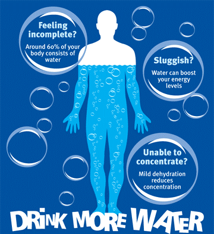

Water is essential and drinking more can make an incredible difference in how one feels!

As this image clearly states, we should drink more water! It helps energize, prevent headaches, detoxify, and all in all keep your beautiful body hydrated.
Since I have started drinking much more water I feel a lot better. I used to get terrible headaches at the end of each day of school because of stress, feeling helpless and overwhelmed... And having water at hand and drinking it regurlary has helped so much!